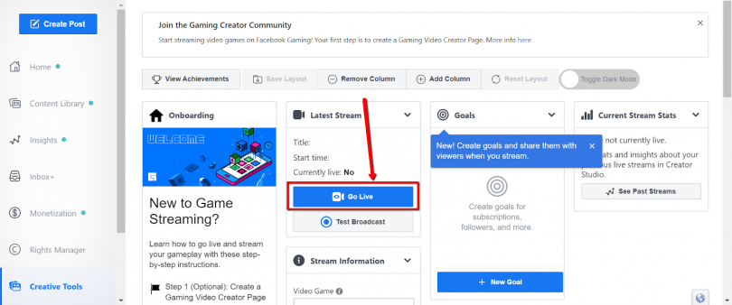

Facebook Live is a feature of the Facebook social network that uses the camera on a computer or mobile device to broadcast real-time video to Facebook. Live broadcasters can decide who on Facebook can see their video and use this content to engage their audience. This guide will help you learn the best tricks that can make a big difference in how many people see your live broadcast. According to the Facebook Page, facebook pays the creator $0.01 USD per Star. Gaming creators who are eligible for Stars can set up their payment account on their Streamer Dashboard and track how many stars they receive. Creators who are qualified to join the Level Up program can access Stars once the program is available to them.
For Facebook Gaming you will need a PC setup that can support your live streaming for a better experience and optimal streaming. In other words, for live video, you'll need a powerful machine. The higher your computer's specifications, the better. You may want to take a look at the PC specs we've provided as a starting point.
1. A modern PC or Mac is needed. Purchasing a desktop PC with higher specifications is less expensive than purchasing a Mac for options.
2. A fast, quad-core processor is ideal.
3. 16GB of RAM or much better, but 8gb would be fine as well
4. A dedicated graphics card, though not needed, can significantly improve performance. For video encoding, OBS Studio and Wirecast (the two software options discussed in this article) can use a dedicated graphics card rather than your computer's integrated graphics.
Consider using a two-machine system if your computer isn't strong enough. Conduct your interview using Zoom or Skype on your first screen. Capture the audio and video from the first computer's monitor into Wirecast on the second computer. Then you can broadcast it live on Facebook.
You may use an integrated webcam and microphone, but an external webcam and microphone would significantly increase the broadcast quality. Starting with a simple webcam like the Logitech C920 is a good place to start. Consider purchasing a dedicated video camera and attaching it to your device via an HDMI capture card to take things to the next stage. Make sure that you use earphones while you’re broadcasting to help minimize feedback.
When broadcasting live video, a fast Internet upload speed is essential. To get the best results, you'll need an upload speed of at least 10 Mbps. This will ensure that you get the highest-quality video and audio.
Checking is crucial, as it is for everything. Although some people have had success with slower upload speeds, upload speeds of less than 5 or 6 Mbps are likely to yield poor performance. Use a speed test tool like Speedtest.net to verify your upload speed before going live each time. Speedtest also has Mac and PC desktop software.
While it's likely that you already have a Facebook account (the social networking site has 2.6 billion monthly users), it's critical to build a dedicated gaming page to attract the right audience. To get started, go to the ‘Create a Gaming Video Creator Page' page and give it a name. Adjust nothing about the ‘Category,' as it is this that grants you access to Facebook Gaming's audience and algorithms. Continue until you've finished naming your page.
Facebook Gaming has a mobile app also that allows you to download mobile games to your Facebook account. But for better experience you'll need broadcast software installed on your PC before you can start streaming. You may do this with Streamlabs OBS, OBS, or XSplit. You're able to start streaming on Facebook once you've set up your broadcast program.
We suggest Streamlabs OBS so you can sign in with your Facebook account and the app will take care of the rest. To go live with OBS, on the other hand, you'll need a stream key, which will change each time you go live. As a result, you should think about having a static one.
Here are the steps we found online (Influencer Marketing Hub) to get a Static Key on the Facebook Gaming Site.
Go to the Streamer Dashboard
Click on “Go Live” in the Latest Stream section.

Select the box that says “Use a Persistent Stream Key”.
Copy and paste your stream key into your streaming platform.

Here are our proposals for best video quality, however note that this fluctuates relying upon the game you are streaming. You should analysis and see what stirs best for your set up and favored game. Note: OBS bitrate is in Kbps, so 10Mbps is 10,000 in OBS.
To begin live gaming, you can choose games that you are interested to and planning to stream. Facebook Live Gaming offers variety of games that everyone can play. Since the set up is already done, the stage is all yours. You can start planning as well what games to stream. You may also follow other FB streamers to find ideas, collaborate and engage.
Live Rehearsals (accessible to Managed Creators and Level Up) permits you to perform test streams on your page without broadcasting openly. Just your page administrators and editors can see these private Live Rehearsal streams. This permits you and your group to tweak your creation by testing new creation work processes, intuitive highlights, new hardware, or in any event, confirming which bitrate and outline rate settings are best for a given game.
The best makers on Facebook post consistently. Plan when you will stream and ensure your watchers know about your streaming timetable. By sticking to a timetable, you fabricate fervor and commitment with your watchers, since they realize when to tune in. Add your timetable to the About part of your Page so your watchers have speedy admittance to it. On Facebook, you can stream up to 8 hours at a time. To maximize viewership, make your stream a show people want to watch the whole way through. Whether you choose a mini-challenge or a theme, it will keep viewers more engaged than a freeform stream.
The initial 3 seconds of a video are too basic to even consider leaving to a monotonous introduction. On Facebook, the News Feed autoplays recordings as the watcher scrolls. Bounce directly into the game to attract watchers, particularly the individuals who have notices on for your live streams.While it's incredible to cooperate with talk in a stream, you don't have to restrict it to reacting to questions. All things being equal, take a stab at recounting an account of ongoing experience in games or a few difficulties of what you will be attempting to do and what they can anticipate around there. Talk can help manage the stream, as well.
Viewers can directly help you, their favorite gaming developer, by purchasing Stars and Subscriptions, as well as indirectly by watching Advertising. The most successful game developers are those who are able to monetize their work the most:
1. define clear benefits for supporters.
2. promote these offerings extensively.
3. follow general streaming best practices
Since it falsely inflates dissemination and monetization, manufactured sharing activity within groups - specifically sharing links in groups to artificially attract new followers and/or viewers - is now being flagged as a breach of Monetization Eligibility Standards (MES). Last year that they'd be focusing on eliminating monetization rewards from content that provides less value to users, and that they'd applied manufactured sharing to our Content Guidelines for Monetization.
Regardless of how many Facebook followers or viewers you have, expecting them to appear at the start of a Facebook Live stream is not a good idea. Giving them plenty of warning and time to fit you into their schedules is even better.
Regardless of how far in advance they are notified, there is no guarantee that an audience would gather for a live stream. You may have the best content on the planet, but it will always be worth it to invest in two or three extra items to ensure that the stream has enough viewers. Streaming while the crowd is the most active on Facebook is something you should do. Even better, you can time the stream to coincide with the peak traffic time on your profile or website - this is one of the most useful Facebook Live tips you'll ever receive. Nobody could possibly go wrong by making it easier for people to keep an eye on them.
You shouldn't be surprised to learn that video quality is one of the most important aspects of any video that a group of people watches. Indeed, the vast majority of people who see themselves as a part of your Facebook crowd will consent. That is a snippet of information that necessitates careful consideration and a plan..
One of the most common misunderstandings about Facebook Live streaming is that it must be done in real time. People believe that you need to stream an event live as it happens. That, however, is completely false. You can live stream pre-recorded content as well as live streaming live content. You can do anything similar with Facebook Live. You can capture and edit video and audio, arrange it in a perfect video sequence, and then broadcast it live on your Facebook page or profile.
One of the most obvious advantages of Facebook Gaming is the ability to reach out to the existing audience you have on the most well-known social media platform. You can easily make a quick post before the stream to inform your companions that you are going online. Furthermore, since it is Facebook, your followers can easily share your posts and help you grow
In terms of virtual reality, we are almost positive that Facebook would attract a large number of viewers. As a result, if you enjoy virtual reality games, Facebook Gaming is the place to be.
You can apply for the Facebook Level Up program once your page has a large number of viewers and followers. It allows you to live stream your games in Full HD at 60 frames per second and provides you with personalized assistance, among other cool features. You'll deal with fan memberships and Facebook Stars, a special currency that allows you to change your stream directly from fan gifts.
Another benefit of Facebook Gaming is that it allows you to live stream your favorite games from your Android phone with only a few taps. Download the app, grant the required permissions, add the game, and go live! The live stream will appear immediately on your associated site — whether it's a personal page or a public gathering.
The platform's main focus is on live decorations that pay for promotions, which means you can have to spend money just to compete with others.
Facebook Gaming, unlike other streaming services, does not allow viewers to use nicknames. Viewers are signed in with their real names, which may put them in danger due to a swarm of scammers.
When you have a family, YouTube channels can also be used to make daily videos of your loved ones. Nothing is private if you decide that YouTube is more important than your relatives. Your children would have access to the internet, which could be a significant change for them. It is not everyone's cup of tea to have their lives broadcast to the rest of the world.
While we can deny that investing in these types of items is not a bad idea since they can be used for a variety of purposes, the costs of the equipment required to provide outstanding live game streaming are very high. But it will make sure to provide you the best quality of streaming.
2021 * 5-minute read
Considering a switch to Facebook Gaming? If so, one of your biggest questions might be: “How do Facebook streamers make money?...
2021 * 5-minute read
To start streaming games on Facebook, you will need to set up a Gaming Video Creator Page. This Page is what you will use to stream...
2021 * 10-minute read
A Facebook Gaming Partner is someone who has surpassed the Level Up program by being discovered by Facebook...
Video Courtesy: Encotric
https://www.youtube.com/watch?v=PJmwsm2b0sI
We create this content for general information purposes and all the information is base on our understanding and researches and it should not taken as advice. Always take professional advice.
Disclaimer: Note that we do not own the images and videos used in this website. All rights and credit goes directly to its rightful owners. This website is non-profit and made for educational purposes only. No copyright infringement intended.
"Copyright Disclaimer, Under Section 107 of the Copyright Act 1976, allowance is made for "fair use" for purposes such as criticism, comment, news reporting, teaching, scholarship, and research. Fair use is a use permitted by copyright statute that might
otherwise be infringing. Non-profit, educational or personal use tips the balance in favor of fair use"